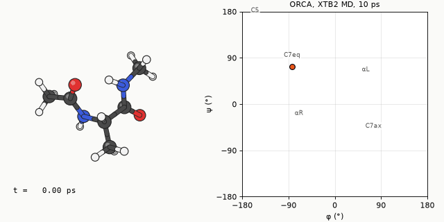
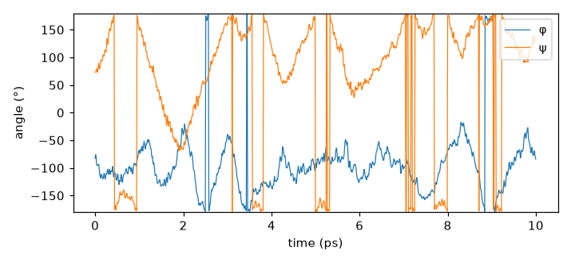

ORCA의 MD 모듈
ORCA의 MD 모듈은 그래디언트를 낼 수 있는 방법이면 무엇이든 힘 계산에 쓴다. HF, DFT, MP2, xTB, QM/MM이 모두 된다. 힘장 대신 전자 구조에서 힘을 얻기 때문에 결합이 끊어지고 생기는 과정도 따라갈 수 있다. 대신 스텝마다 SCF와 그래디언트를 새로 계산하므로 비용이 스텝 수에 정비례한다. 주기 경계 조건은 없어서 기체상 분자나 암묵적 용매 속 분자, 혹은 작은 클러스터가 대상이다.
최소 입력
키워드 줄에 MD를 넣고, 무엇을 할지는 %md 블록에 순서대로 적는다.
! XTB2 MD ALPB(water)
%md
Timestep 0.5_fs
Initvel 300_K
Thermostat NHC 300_K Timecon 50.0_fs
Dump Position Stride 20 Filename "traj.xyz"
Run 20000
end
* xyzfile 0 1 mol.xyz
%md 블록은 다른 ORCA 블록과 달리 위에서 아래로 실행되는 짧은 스크립트다.
Run을 만나야 적분이 시작되고, Run 뒤에 온도를 바꾸고 다시 Run을 쓰면 이어서 돈다.
값에는 _fs, _K처럼 단위를 붙인다.
명령 하나씩
| 명령 | 하는 일 |
|---|---|
Timestep 0.5_fs | 적분 시간 간격 |
Initvel 300_K | 맥스웰–볼츠만 분포로 초기 속도를 무작위로 준다. 이미 평형인 계에 다시 쓰면 속도가 전부 덮어써진다. |
Thermostat NHC 300_K Timecon 50.0_fs | 온도 조절기. 종류, 목표 온도, 결합 시간 상수 |
Dump Position Stride 20 Filename "traj.xyz" | 20스텝마다 좌표를 xyz로 저장. Velocity, Force도 같은 방식 |
Run 20000 | 20000스텝 진행 (여기서는 0.5 fs × 20000 = 10 ps) |
이 밖에 제약(Constraint), 집합 변수(Manage_Colvar), 구속 퍼텐셜(Restraint),
메타다이내믹스(Metadynamics), 원자 부분집합(Manage_Region) 명령이 있다.
시간 간격과 온도 조절
시간 간격은 가장 빠른 진동이 정한다. 유기 분자에서는 X–H 신축(약 3000 cm⁻¹, 주기 약 11 fs)이 가장 빨라서, 수소가 있는 계는 0.5 fs가 안전하다. 1 fs로 늘리면 두 배 빠르지만 에너지가 서서히 새는지 확인해야 한다. xtb 단독 프로그램은 X–H 결합을 고정하고 수소 질량을 늘려 2~4 fs를 쓰는데, 이것은 xtb 가이드에서 다룬다.
| 온도 조절기 | 언제 |
|---|---|
Berendsen | 초기 가열과 예비 평형에만. 정준 앙상블을 재현하지 못한다. |
NHC | Nosé–Hoover 사슬. 정준 앙상블. 일반적인 NVT 생산 계산용 |
CSVR | 확률적 속도 재조정. 정준 앙상블. NHC와 함께 표준 선택지 |
Timecon이 작을수록 온도를 세게 붙잡는다. 너무 작으면 동역학 자체가 왜곡되고, 너무 크면 온도가 표류한다.
이 장의 예제는 50 fs를 썼다.
예제: 물 속의 알라닌 다이펩타이드
위의 최소 입력 그대로, 16장에서 최적화한 알라닌 다이펩타이드를 GFN2-xTB/ALPB(water)로 300 K에서 10 ps 돌렸다. 왼쪽은 분자, 오른쪽은 백본 이면각 φ, ψ의 궤적이다. 알라닌 다이펩타이드의 φ/ψ 지도에는 C7eq, C5, αR 같은 이름 붙은 안정 영역이 있어서, 분자가 어느 컨포머 근처를 떠도는지 한눈에 보인다. 계산은 NUS HPC에서 ORCA 6.1.0, 8코어로 돌렸고 20스텝(10 fs)마다 좌표를 저장해 1001프레임을 얻었다.


분자는 C7eq(ψ ≈ 50~100°)에서 출발해 10 ps 동안 C5/β 영역과 C7eq 사이를 다섯 번 왕복했다. C5/β 영역에서는 ψ가 ±180° 근처에 있어서, 위 그래프에서 ψ 선이 위아래 끝을 넘나드는 구간이 그곳이다. 1.6~2.3 ps에는 ψ가 −69°까지 내려가 αR 쪽에 잠깐 들렀다. ψ만으로 나누면 전체 프레임의 52%가 C5/β, 42%가 C7eq, 7%가 αR이다. 반면 φ는 내내 −50~−180° 사이에 머물렀고, φ가 양수인 αL·C7ax 쪽으로는 한 번도 넘어가지 않았다. φ가 +164~+180°로 찍힌 28프레임은 −180° 경계를 넘어 반대편으로 감겨 보이는 값일 뿐이다. 그 장벽은 300 K의 10 ps로는 넘기 어렵고, 넘기려면 메타다이내믹스를 쓴다.
초기 속도는 300 K로 줬지만 구조가 극소에서 출발했기 때문에, 운동 에너지 일부가 곧바로 퍼텐셜 에너지로 넘어가 8 fs 만에 112 K까지 떨어졌다. 이후 NHC가 에너지를 채워 넣어, 처음 1 ps를 버린 나머지 구간의 평균은 301.6 ± 63.7 K(표준편차)였고 1 ps씩 끊은 평균은 275~322 K 사이에 있었다. 원자 22개짜리 분자에서는 정준 앙상블이라도 순간 온도가 이만큼 흔들린다. 자유도 60개일 때 이론값은 300 K × √(2/60) ≈ 55 K다. 온도 조절기까지 포함한 보존량은 10 ps 동안 2 × 10⁻⁵ Eh(0.01 kcal/mol)만 표류해서, 0.5 fs 간격이 충분히 작았다. 입력과 출력은 o03 입력, o03 출력, 스텝별 온도와 에너지가 담긴 o03-xtb-md.md.log에 있다.
궤적 파일은 보통 xyz라서 Python 몇 줄로 이면각을 뽑을 수 있다.
import numpy as np
def dihedral(x, i, j, k, l):
b0, b1, b2 = x[i] - x[j], x[k] - x[j], x[l] - x[k]
b1 /= np.linalg.norm(b1)
v = b0 - b0 @ b1 * b1
w = b2 - b2 @ b1 * b1
return np.degrees(np.arctan2(np.cross(b1, v) @ w, v @ w))
# 원자 번호는 0부터. 이 분자에서 φ = (1, 3, 4, 6), ψ = (3, 4, 6, 8)방법별 비용
같은 분자와 같은 입력으로 힘 계산만 r2SCAN-3c로 바꿔 200스텝(100 fs)을 돌리고, 스텝당 시간을 비교했다.
| 방법 | 스텝당 시간 (8코어) | 10 ps에 드는 시간 |
|---|---|---|
| GFN2-xTB / ALPB | 0.173 s | 57 min 48 s (실측) |
| r2SCAN-3c / CPCM | 18.6 s (200스텝 3711 s) | 약 103 h (추정) |
스텝당 약 107배 차이다. r2SCAN-3c 쪽은 xTB가 10 ps를 도는 것과 거의 같은 1시간 2분 동안 100 fs밖에 가지 못했다.
그 100 fs 동안 온도는 xTB 때처럼 극소에서 출발한 탓에 7.5 fs 만에 115 K까지 떨어졌고, 뒤쪽 50 fs 평균도 174 K에 그쳤다.
평형에 한참 못 미친 궤적이라 구조를 논할 수는 없고, 스텝당 비용을 재는 데만 썼다
(o04 입력 ·
o04 출력 ·
o04-r2scan-md.md.log). xTB 쪽 57분 48초 가운데 51분 17초(89%)가 xtb 계산이었고, 약 5분(9%)은 MD 모듈이
"dark time"이라고 따로 보고하는 부분이다. ORCA가 스텝마다 otool_xtb를 새 프로세스로 띄우고 파일을
주고받는 데 드는 시간이라, 이렇게 작은 분자에서는 무시할 수 없는 몫이 된다.
DFT MD는 짧은 반응 사건을 보거나 xTB 결과를 확인할 때 쓰고, 컨포머 공간을 훑는 긴 계산은 xTB로 한다.
긴 계산 나눠 돌리기
MD 모듈은 스텝마다 basename.mdrestart를 새로 쓴다. 클러스터의 작업 시간 제한에 걸려 잘려도
같은 입력을 다시 제출하면 이어서 돈다. 아래 두 줄을 Run 바로 앞에 두면 첫 실행과 이어 돌리기를 같은 입력으로 처리할 수 있다.
%md
Timestep 0.5_fs
Thermostat NHC 300_K Timecon 50.0_fs
Dump Position Stride 20 Filename "traj.xyz"
Restart IfExists # 재시작 파일이 있을 때만 읽는다
Initvel 300_K No_Overwrite # 속도가 이미 있으면 건너뛴다
Run 20000
end좌표, 속도, NHC 내부 상태, 메타다이내믹스 언덕, 스텝 카운터만 저장된다. 온도 조절기, 덤프, 제약 같은 설정은 저장되지 않으므로 입력에서 지우면 안 된다.
메타다이내믹스
보통의 MD는 장벽이 몇 kcal/mol만 되어도 수십 ps 안에 넘지 못하는 일이 많다. 메타다이내믹스는 지나온 자리에 가우시안 언덕을 쌓아 같은 곳에 머물지 못하게 하고, 쌓인 언덕으로부터 자유에너지 지형을 되짚는다. φ, ψ를 집합 변수로 두면 다음과 같다.
%md
...
Manage_Colvar Define 1 Dihedral Atom 1 Atom 3 Atom 4 Atom 6 # φ
Manage_Colvar Define 2 Dihedral Atom 3 Atom 4 Atom 6 Atom 8 # ψ
Metadynamics Colvar 1 Scale 10.0_Deg Colvar 2 Scale 10.0_Deg
Metadynamics HillSpawn 40 0.5 1.0 Store 2000
Run 100000
end
HillSpawn의 세 값은 몇 스텝마다 언덕을 놓을지, 언덕 높이(kJ/mol), 폭(Scale 단위)이다.
자유에너지 지형이 어느 정도 수렴하려면 보통 수만 스텝 이상이 필요하다.
이 가이드의 실행분에서는 같은 분자의 메타다이내믹스를 xtb 단독 프로그램으로 돌렸고, 결과는 xtb 가이드에 있다.
ORCA MD를 쓸 때와 아닐 때
- ORCA MD가 맞는 경우: DFT나 더 높은 수준의 힘이 필요한 짧은 동역학, QM/MM 동역학, ORCA의 다른 기능과 한 입력에서 이어 쓰고 싶을 때.
- xtb 단독이 편한 경우: xTB만으로 충분한 긴 컨포머 탐색. SHAKE로 큰 시간 간격을 쓰고, CREST와 바로 이어진다.
- 주기계: 고체나 표면, 명시적 용매 상자는 Quantum ESPRESSO나 힘장 기반 LAMMPS로 간다.
MD 모듈은 Martin Brehm이 개발했다. ORCA 매뉴얼의 MD 절에 인용할 문헌이 정리돼 있다.